大勝軒の自家製チャーシューの作り方のメモ「自家製チャーシューの作り方」を公開してから1年半くらい。
美味しいけど、ちょっと醤油辛い、出汁がどうしても余るのが気になってたのを改善してできたメニューです😊
ちょうどいい出汁の量になって、そのままでも醤油辛くもなく、単独でも美味しく、またご飯の上にのせてチャーシュー丼にしてもいけるチャーシューになりました。
お試しいただけると嬉しいです。つくれぽもおまちしております！
Immersive Web Meetupを開催したよ！
2019年9月13日（金）にメルカリさんで「Immersive Web Meetup」を開催しました。
9月16日から1週間の日程でTPAC（W3C年次会議）が福岡であり、せっかくの機会なのでTPACに参加されるついでに東京に立ち寄るW3C関係者の方々をお招きして
コミュニティに向けてお話をしていていただきたい！と想いを込めて企画しました。2015年にTPACが札幌であったときにもWeb Music Developer Meetup@札幌と題して札幌で開催しています。懐かしいです。
展示も行いました！
映像のXRと音楽のAudio、MIDIという区分で切らず、2つを混ぜ合わせたMeetupにすることで「Immersiveな世界はウェブでも実現できる」をより実感していただくことを意識して展示枠も設けました。そして当日は以下の5つの展示をしていただきました。
- AR切り絵 - AR Clock Tower, 着せ替え天気予報 by @kageori_w
- webARであそぶ！デジタルファッション by @saharu54
- Web360Square by @AtonKish
- Sound Engine for Web Based Novel Game by @aike1000
- 音に反応して動くMIDIコンバータ by @sascacci
- Web360Square by @AtonKish
Meetupでの展示というのは、個人的には初の試みでしたがやはり対象のAPIが「見て、聞いて」という感じるが主体なこともあり、展示場所周辺は人だかりで盛り上がっていました！
なのですが、非常に残念ながら写真撮影を失念、、、、という大失態。写真でのご紹介ができなくて非常に残念です・・・ごめんなさい。
Talk Session
お話をしてくださったのは、Hongchan Choi、Chris Wilson、それから羽賀 流登さんの3名です。
「9 Years of Web Audio」 - Hongchan Choi
Web Audioが最初に実装された2010年から今までの経緯、そしてこれから議論が始まる Audio Device Client の紹介と続きました。
英語ではありますが、スライドにコメントが完璧に書かれているので、詳細はそちらで！
身近で見ていたこともあり、自分自身は、現在に至る歴史、W3Cでのプロセスに関する内容を改めて振り返ると、標準化の難しさ、大変さを改めて感じました。
「WebXR: AR and VR on the Web」 - Chris Wilson
WebXRのキーとなるピース、そしてウェブでのVR、ARの状況（実装方法も含む）、そしてW3CのでのVR、ARを扱うImmersive Web WGの状況、
そして最後に音がImmersiveを広める大きなキー技術になる。そしてWeb Audioはすでに3Dオーディオが実装されていて、
WebXRを簡単に実装できるThree.jsやA Frame経由でも利用できることが紹介されました。
3Dオーディオも含めて、Three.jsやA Frame経由で手軽に実装できるという点はサクッと作るときにはホントに便利だと感じます。今後、事例が増えることに期待しています。
「PlayCanvasで始めるWebXR」 - 羽賀 流登
WebXRやるならPlayCanvasががとても良い、というお話。実例、またそのデモも含めた内容でした。
第三者が体験しているVRな世界を、各自がもっている端末のブラウザを通して皆で同時に共有して眺めるシステムが非常に印象的で、ここまでできるのか？！とビックリしました。
おわりに
Web Audio、WebXRの両面からのTalk Session、また展示を行うことで「Immersiveな世界はウェブでも実現できる」ことに対して更なる可能性を最も感じていたのは自分自身だったのかもしれません。参加いただいたみなさんも、そうであると嬉しいです。そして自分自身は「ウェブはいい」というのを改めて認識することになりました。
Meetup全体に関しては、WebXRとWebAudio(Music)が一緒にMeetupを行い、展示枠も設けるという初の試みばかりでどうなるのかという心配はありましたが、結果的には「見て、聞いて、感じてもらう」ことが実現できたと感じていてホッとしております。
こういったクロス・コミュニティでMeetupを行い、未来を感じる、というのはホントによいですね！！また機会がありましたら検討したいと思っています。
最後になりましたが、今回会場をご提供いただきましたメルカリさん、そして軽食のスポンサーをしていただきましたGoogleさんには心から感謝申し上げます。ありがとうございました。
左2人目から、Hongchan、Chris、えーじさん
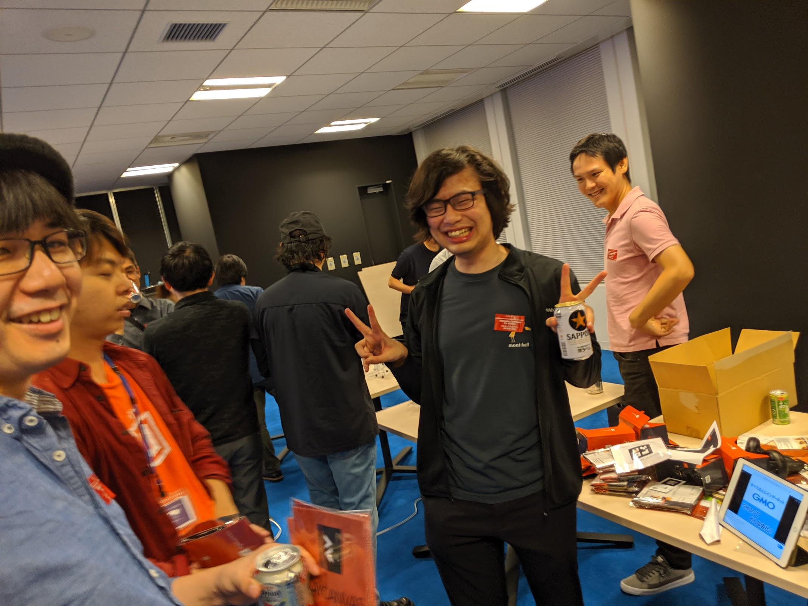
羽賀さん
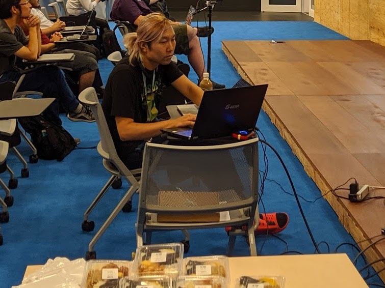
オススメの「まんぷくにぎり」のおむすび
The receptionists at yesterday's event were famous people @sisidovski and @kosamari pic.twitter.com/AzVL3d6nEL
— Eiji Kitamura / えーじ (@agektmr) September 14, 2019
豪華受付の方々！ありがとうございました！
パンダエクスプレスのChow Mein（中華風焼きそば）風なレシピを追加！
やっと追加のみんな大好きパンダエクスプレスの「Chow Mein、やきそば、チョーメン」！！
自分で言うのもアレですが、パンダのそれよりも少し上品な味になってるかも😅
BBQとか定番の「ソース焼きそば」に飽きたら是非！我が家も「焼きそば」は「ソース」だったのが、幅が広がりました！
（本家パンダエクスプレスのChow Meinはこちら）
焼きそば-ChowMein-チョーメン
AndroidアプリをBitriseでCIする。
これは何？
「AndroidアプリをCircleCIでCIする。」のCircleCIをBitriseに変更した時のメモです。
Bitriseの設定のみを書いていこうと思いますので、詳細は「AndroidアプリをCircleCIでCIする。」を御覧ください。
概要
Bitrise
BitriseはCircleCIと同じ種類のクラウド型のCIサービスです。
ロンドンとブダペスト（ハンガリー）にオフィスを持っています。シリコンバレーじゃないのが新鮮でした。
できること
BitriseはiOS、Android、Swift、React Nativeをビルド、テスト、デプロイすることが可能です。本記事では、Androidのビルド、テストをみていきます。
価格
詳しいテーブルはこちらです。小さな組織向けとエンタープライズ向けが用意されてます。 小さな組織向けの1部はこんな感です。（2019年7月現在）
- Hobby（無料）：複数同時ビルドは不可、ビルド時間は10分、月に200回ビルドまで、使えるのは標準マシーン、追加可能なメンバーは2名
- Developer（$36/mo）：複数同時ビルドは不可、ビルド時間は45分、ビルド回数は無制限、使えるのは標準マシーン、メンバーの無制限追加可能
さっそく使ってみる
GitHubとBitriseのアカウントが必須ですのでご用意してください。
この記事ではこのリポジトリのコードをサンプルとして使いますので、
ForkもしくはCloneしてリポジトリに追加しておいてください。
それでは追加していきます。
アプリを追加する
下右図のように、ターゲットになるリポジトリを指定してアプリを追加します。
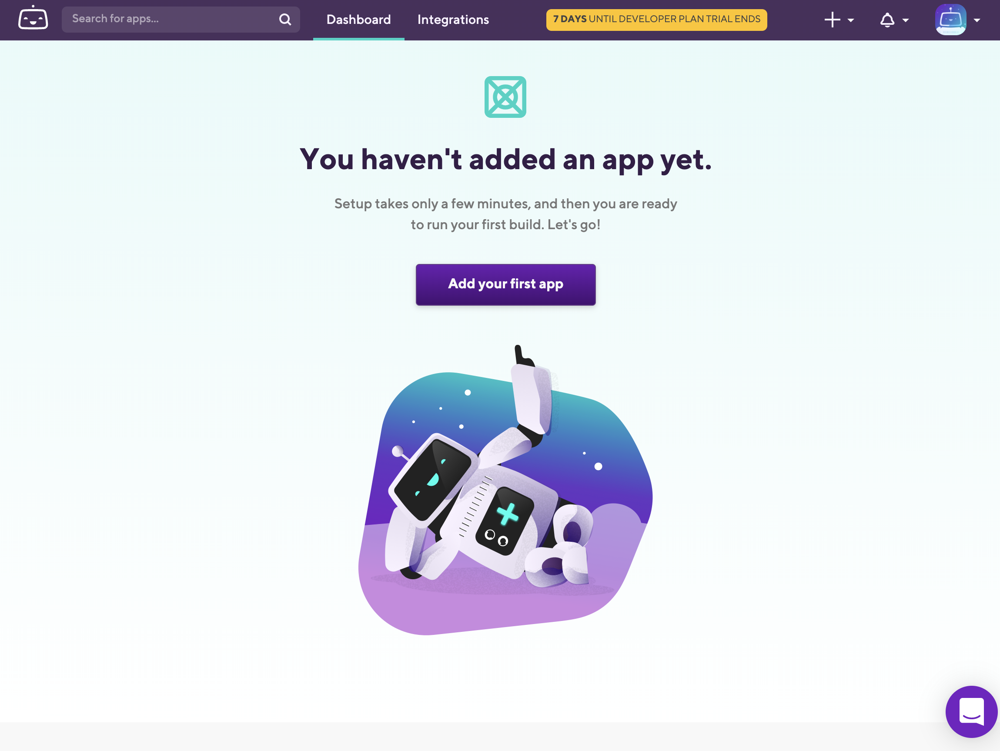
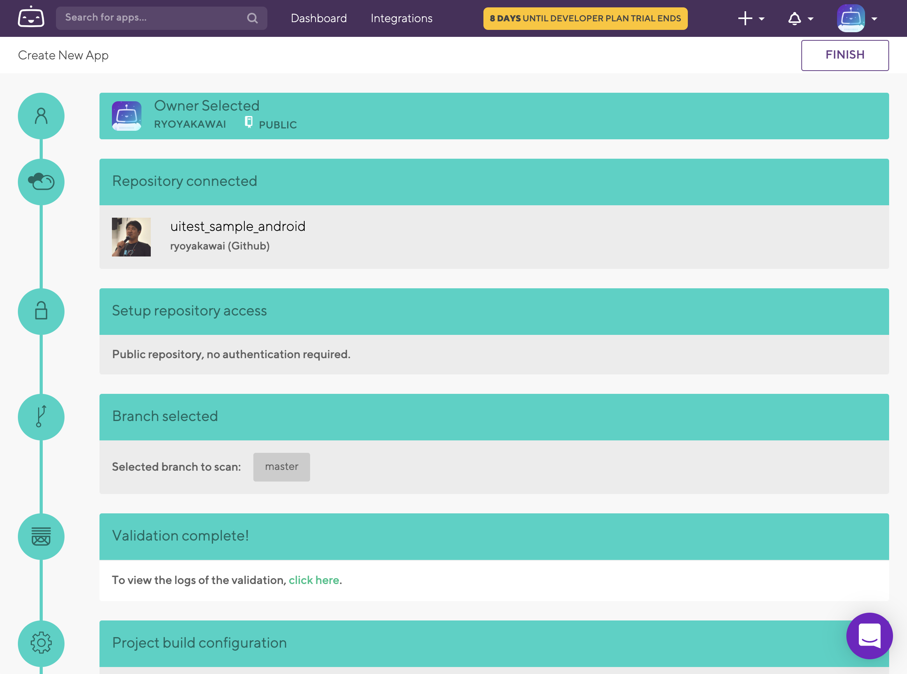
Workflowの設定画面を表示する
アプリの追加が完了すると同時にビルドを走らせてくれます。
が、取り急ぎWorkflowの設定画面を開いてしまいます。プロジェクト名をクリック（下図(1)）して
次にWorkflowのタブをクリック（下図(2)）して表示します。
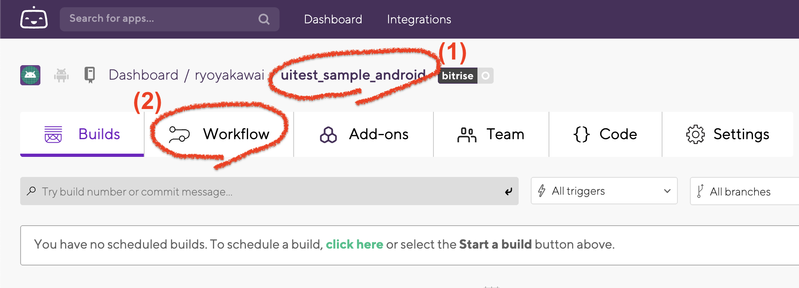
タスクを追加する
アプリを追加した状態ではUIテストは追加されませんので、UIテストされるように設定する必要があります。 追加するタスクは以下の2つです。
- Gradle Runner
- [BETA] Virtual Device Testing for Android
赤四角の中の2つを追加する。
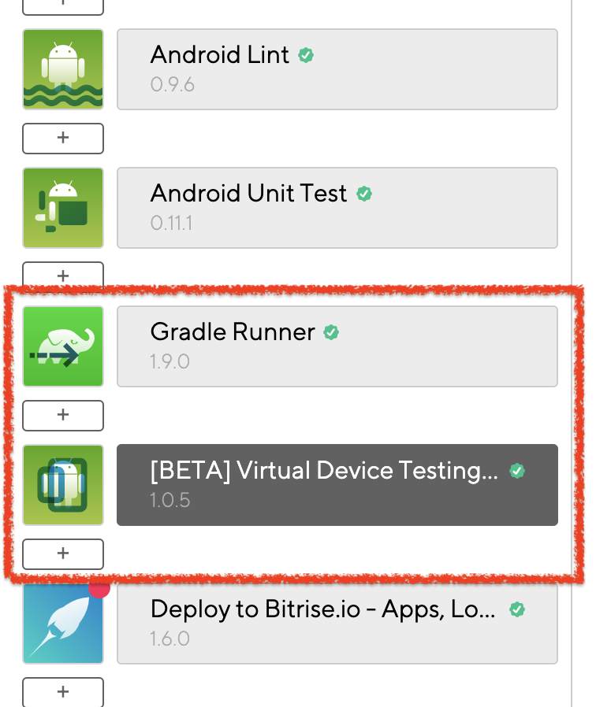
＞ Gradle Runnerの追加
Android Unit Test のアイコンの直下にある「＋」ボタン（下図（1））をクリックして、「Gradle Runner」で検索すると絞込まれて表示されますので クリックして追加します。（下図(2)）
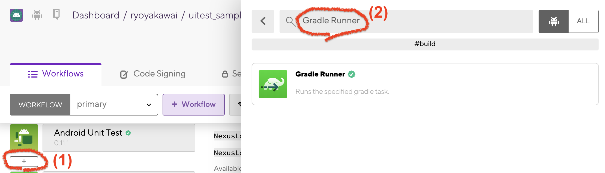
追加すると設定画面が表示されますので以下の2つの四角を変更します。
- Gradle task to run ：
assembleDebug assembleDebugAndroidTest - gradlew file path ：
./gradlew
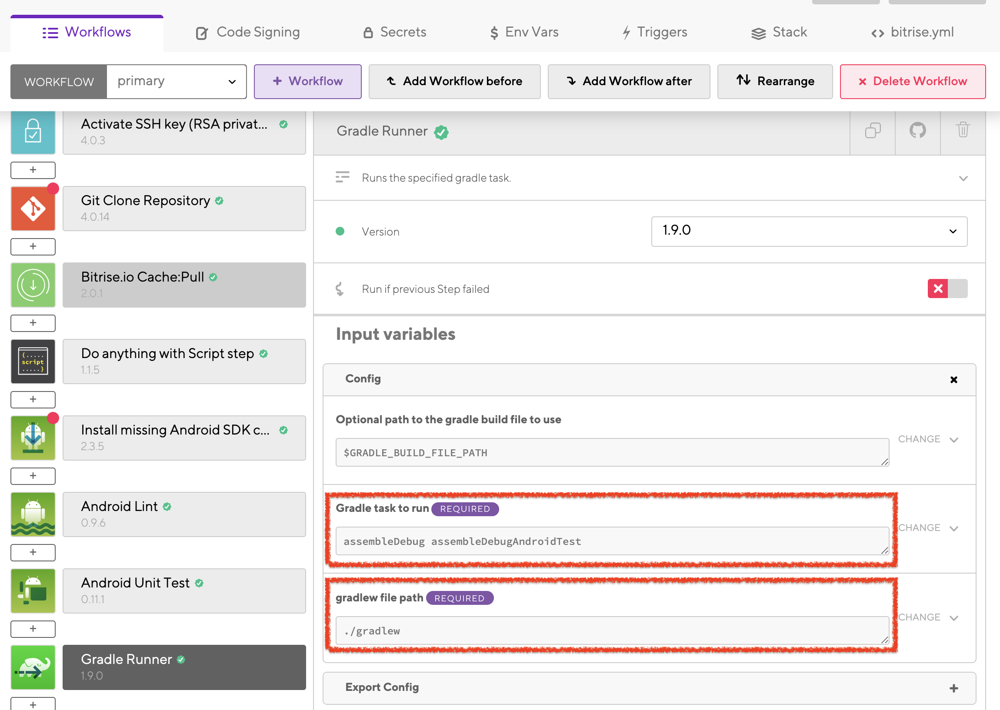
＞ [BETA] Virtual Device Testing for Androidの追加
先程追加したGradle Runner の次に追加しますので、直下にある「＋」ボタン（下図（1））をクリックして、「[BETA] Virtual」で検索します。すると絞込まれて表示されますので クリックして追加します。（下図(2)）
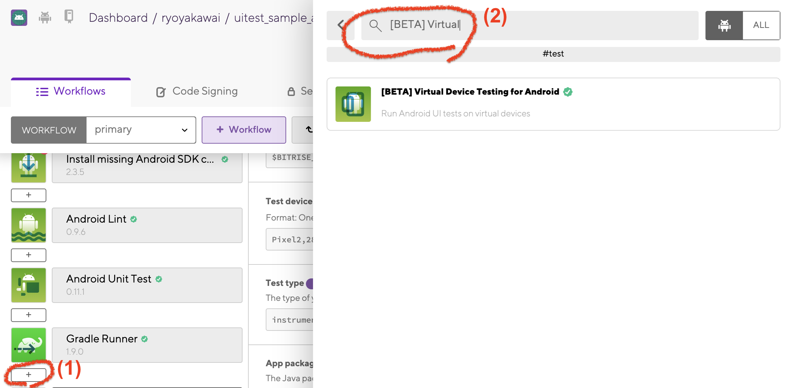
追加すると設定画面が表示されますので以下の2つの四角を変更します。
- Test devices ：
Pixel2,28,en,portrait - Test type ：
instrumentation
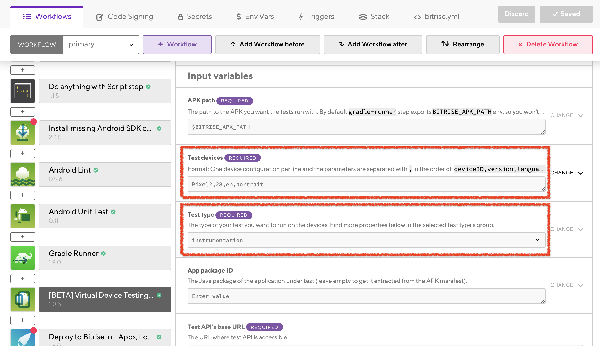
なお、Test devices はサンプルアプリに minSdkVersion 26 と指定しているので26以上に設定しています。
また、先程変更した Gradle Runner の Gradle task to run の assembleDebug assembleDebugAndroidTest がデフォルトの assemble のままになっていると
テスト用のAPK(app-debug-androidTest.apk)が作成されず、API path で使う環境変数の $BITRISE_APK_PATH に app-release-unsigned.apk等に指定あれてしまい
[BETA] Virtual Device Testing for Android が動作できずエラーになりますので、確実に変更するようにしてください。
ちなみに、この [BETA] Virtual Device Testing for Android は「Firebase Test LabでUI Testを実行する」 でも紹介しているのと同じくGCPコマンドから Cloud Testing API(Firebase Test Lab) をラップして使っているようです。
実行する
以上でUI Testまで実行できるようになったはずなので画面内にある [Start/Schedule a Build] ボタンをクリックしてビルドを実行します。
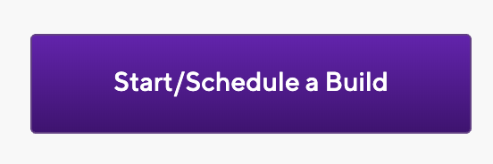
おわりに
ガガっとリポジトリを読んで、設定作ってくれるところは楽チンでよかったですが、 Gradle Runner の Gradle task to run 環境変数 $BITRISE_APK_PATH の設定で ハマりました。Firebase Test Labからのエラーメッセージ見られると良いかもな〜、と感じています。
今回のbitrise.yml
今回できあがった bitrise.yml もココに貼っておきます。参考になれば幸いです。
---
format_version: '8'
default_step_lib_source: https://github.com/bitrise-io/bitrise-steplib.git
project_type: android
trigger_map:
- push_branch: "*"
workflow: primary
- pull_request_source_branch: "*"
workflow: primary
workflows:
deploy:
steps:
- activate-ssh-key@4.0.3:
run_if: ''
- git-clone@4.0.14: {}
- cache-pull@2.0.1: {}
- script@1.1.5:
title: Do anything with Script step
- install-missing-android-tools@2.3.5:
inputs:
- gradlew_path: "$PROJECT_LOCATION/gradlew"
- change-android-versioncode-and-versionname@1.1.1:
inputs:
- build_gradle_path: "$PROJECT_LOCATION/$MODULE/build.gradle"
- android-lint@0.9.6:
inputs:
- project_location: "$PROJECT_LOCATION"
- module: "$MODULE"
- variant: "$VARIANT"
- android-unit-test@0.11.1:
inputs:
- project_location: "$PROJECT_LOCATION"
- module: "$MODULE"
- variant: "$VARIANT"
- android-build@0.10.0:
inputs:
- project_location: "$PROJECT_LOCATION"
- module: "$MODULE"
- variant: "$VARIANT"
- sign-apk@1.3.1:
run_if: ''
- deploy-to-bitrise-io@1.6.0: {}
- cache-push@2.2.0: {}
primary:
steps:
- activate-ssh-key@4.0.3:
run_if: ''
- git-clone@4.0.14: {}
- cache-pull@2.0.1: {}
- script@1.1.5:
title: Do anything with Script step
- install-missing-android-tools@2.3.5:
inputs:
- gradlew_path: "$PROJECT_LOCATION/gradlew"
- android-lint@0.9.6:
inputs:
- project_location: "$PROJECT_LOCATION"
- module: "$MODULE"
- variant: "$VARIANT"
- android-unit-test@0.11.1:
inputs:
- project_location: "$PROJECT_LOCATION"
- module: "$MODULE"
- variant: "$VARIANT"
- gradle-runner@1.9.0:
inputs:
- gradlew_path: "./gradlew"
- gradle_task: assembleDebug assembleDebugAndroidTest
- virtual-device-testing-for-android@1.0.5:
inputs:
- test_type: instrumentation
- test_devices: Pixel2,28,en,portrait
- deploy-to-bitrise-io@1.6.0: {}
- cache-push@2.2.0: {}
app:
envs:
- opts:
is_expand: false
PROJECT_LOCATION: "."
- opts:
is_expand: false
MODULE: app
- opts:
is_expand: false
VARIANT: ''
Espresso, UI AutomatorでAndroidのUI Testを書く
これは何？
「AndroidアプリをCircleCIでCIする。」のUI Testの書き方について説明した記事です。 具体的にはサンプルアプリのUI Testであるこれの説明です。
概要
AndroidでUI Testを書く
Androidが公式にサポートしているUI Testのツールは Espresso、 UI Automator の2種類あります。 それぞれ以下の特徴がありますので「どちらを使うか？」については「どちらも併用して使う」のがいいように感じています。
Espresso
「to write concise, beautiful, and reliable Android UI tests」と公式サイトには説明されています。特定のアプリのUIに対してのスクリプトで動作をさせることを可能にするテストフレームワークです。単一のアプリの操作を自動化する場合に使うとよいでしょう。Google社が開発していますので、Anroidの公式のテストツールと言ってよいでしょう。
サンプルアプリではアプリの操作のすべてをEspressoで書いています。
UI Automator
「suitable for cross-app functional UI testing across system and installed apps.」と公式サイトに説明されている通りで、Espressoと比べると、よりAndroidのOSに近い側に位置しているテストフレームワークで、複数アプリを行き来するよう動作をスクリプトで定義することの可能です。Espressoとは違い、複数のアプリの操作を自動化する場合に使うとよいでしょう。こちらもEspressoと同じくGoogle社が開発していますので、Anroidの公式のテストツールと言ってよいでしょう。
サンプルアプリではスクリーンショットの撮影、Permissionリクエストのウィンドウの操作の2つをUI Automatorで書いています。

Espresso、UI AutomatorでTestを書く準備をする
以下の2つのファイルに追加して準備完了です。
＞ build.gradle に以下を追加
....
allprojects {
....
tasks.matching {it instanceof Test}.all {
testLogging.events = ["failed", "passed", "skipped"]
}
....
}
....
＞ app/build.gradle に以下を追加
....
dependencies {
....
// for connected Android test
androidTestUtil 'com.android.support.test:orchestrator:1.0.2'
androidTestImplementation 'com.android.support.test:runner:1.0.2'
androidTestImplementation 'com.android.support.test.espresso:espresso-core:3.0.2'
androidTestImplementation 'com.android.support.test.espresso:espresso-intents:3.0.2'
androidTestImplementation 'com.android.support.test.uiautomator:uiautomator-v18:2.1.3'
androidTestImplementation 'com.android.support.test:rules:1.0.2'
androidTestImplementation 'junit:junit:4.12'
....
}
テストを書く
テストはapp/src/androidTest/[Package名]以下に書いていきます。
今回のパッケージ名は com.example.uitestsample
ですので app/src/androidTest/java/com/example/uitestsample/
以下にコードを書いていきます。
ファイル作成の粒度はActivity毎、Fragment毎、機能毎等、自由にまとめてしまって問題ありません。
サンプルアプリではActivity毎でまとめてMainActivityInstrumentedTest.ktに書いています。
前準備
@RunWith(AndroidJUnit4::class)
@SdkSuppress(minSdkVersion = 26)
@LargeTest
class MainActivityInstrumentedTest {
private val _packageName = "com.example.uitestsample"
private val mUTs: UiTestUtils = UiTestUtils()
// ^^^ ツールをインスタンス化 ^^^
@Rule
@JvmField
val mActivityTestRule: ActivityTestRule<MainActivity> =
ActivityTestRule(MainActivity::class.java)
@Rule
@JvmField
val cGrantPermissionRule: GrantPermissionRule =
GrantPermissionRule.grant(android.Manifest.permission.WRITE_EXTERNAL_STORAGE)
// ^^^ スクリーンショット保存の為にSTORAGEへのアクセスを強制的に許可 ^^^
@Rule
@JvmField
val screenshotRule = ScreenshotTakingRule(this.mUTs)
// ^^^ Test失敗時をスクリーンショットを撮影するように指定 ^^^
@Before
fun setup() {
this.mUTs.setActivity(mActivityTestRule.activity)
}
@After
fun teardown() { }
....
}
「Test失敗時をスクリーンショット」の動作は uitestutils/UiTestUtils.kt の最後に定義されています。
....
class ScreenshotTakingRule(mUTs: UiTestUtils) : TestWatcher() {
private var mUTs = mUTs
override fun failed(e: Throwable?, description: org.junit.runner.Description?) {
super.failed(e, description)
val path = mUTs.screenShot("FAIL-$description")
mUTs.log_d(">>> !!! TEST FAILED !!! <<< ScreenShot Taken method=[$description] filename=[$path]")
}
}
テストケース
サンプルアプリではテストケースは以下の3つです。 「ケースとして足りない！」とかツッコミはありかもしれませんが、UI Testを動かすことを目的としていますのでご容赦ください。
useAppContext()：テストしているアプリのパッケージ名を確認checkTextHelloWorld()：アプリ起動時、中心の「Hello World!」の表示を確認checkButtonIncrementFloating()：画面右下のボタンをタップすると表示している数字がカウントアップしSnackbarが表示され、またメニューからResetするとゼロになることを確認
checkButtonIncrementFloating() のポイントをインラインで説明します。
Testのコード全体はこちらになりますので合わせて御覧ください。
....
@Test
fun checkButtonIncrementFloating() {
// false にすることでTestが成功した場合でもスクリーンショットを残せます。
// デフォルトでは、Testが成功するとスクリーンショットは全削除となります。
this.mUTs.prepareScreenShot(false)
....
val willTap = 5
// 右下の赤色のFabを指定
val incrementButton = withId(R.id.increment_fab_text)
// カウンターを増加させて表示が想定通りであるか確認する
for(i in 1..willTap) {
// スクリーンショットを撮影
mUTs.screenShot("", "BEFORE >>> カウンター：インクリメント IDX=[$i]")
// 指定した赤色のFabをタップ
onView(incrementButton).perform(click())
// Permissionリクエストが出てたら許可（このテスト中は出ないはず）
mUTs.allowPermissionsIfNeeded()
// スクリーンショットを撮影
mUTs.screenShot("", "AFTER >>> カウンター：インクリメント IDX=[$i]")
// 要素内の文字列を取得
actualCount = this.mUTs.getText(withId(R.id.main_content_text))
// ログを残す
this.mUTs.log_d("[Counter SEQ] 🍏🍎 expected=[$i] actual=[$actualCount]")
// 文字列をAssert
assertEquals("[Counter SEQ] 🍏🍎", i.toString(), actualCount)
// Snackbarの文言チェック
val snackBarTapped = allOf(withId(android.support.design.R.id.snackbar_text), withText("Tapped $i times."))
// Snackbarがから消えるのを待つ
waitForSnackbarDisappear(snackBarTapped)
// Sleepする
this.mUTs.sleep("SHR")
}
....
// this.mUTs.prepareScreenShot() に false をセットしていなければ
// スクリーンショットを削除する（）
this.mUTs.removeSuccessScreenShots()
....
}
....
IDが指定されていないエレメントの指定方法
エレメントに対してIDが振られている場合は大抵の場合そのIDを使うことで指定することが可能ですが、 指定されていない場合は Layout Inspector （公式ドキュメント）で階層構造を取得 して解析をしてから、以下のように指定を行います。
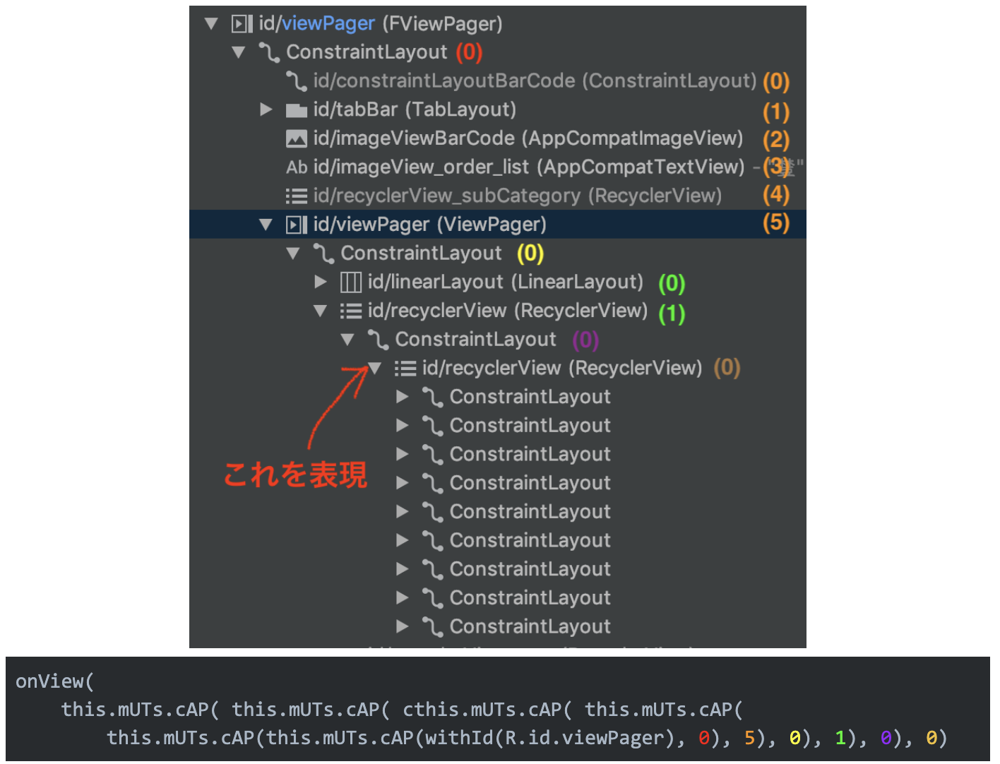
Fragmentの重なり方が操作によって変化する場合があり、表示は同じでも階層が違う場合が多々発生します。 ですので、Layout Inspectorで階層構造を取得するときはUI Testでのシナリオ通りに一度画面を遷移させて、それから取得すると良いでしょう。
おわりに
iOS標準のUI TestツールであるXCTestに比べると
癖が少し強いです。とっつきにくいところもありますが、そこまで難しくはないので気になっている場合は挑戦してみてください。
自分の作ったアプリが自動で動くのを見るのも楽しいと思います。